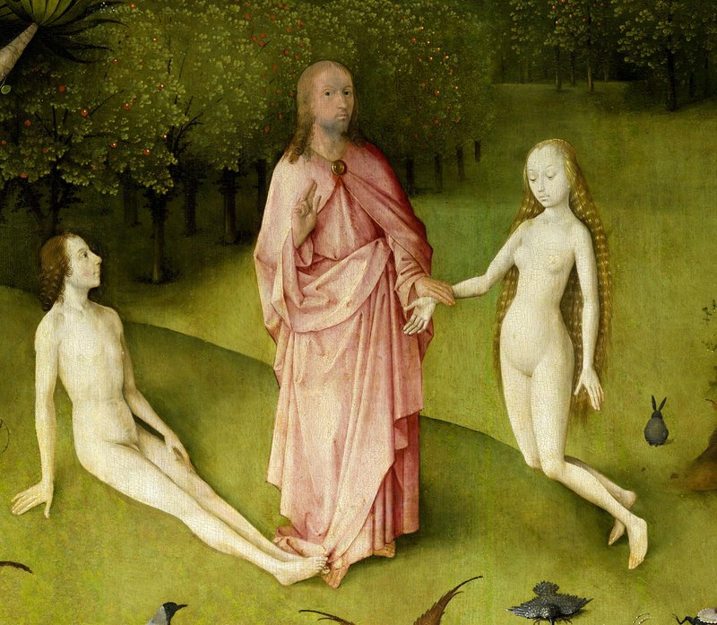
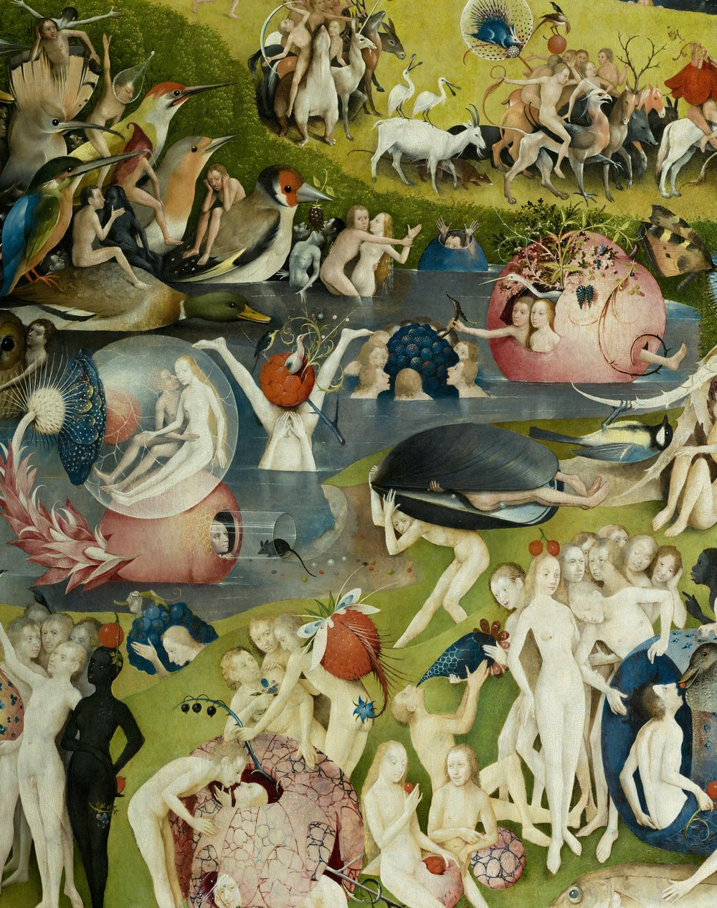
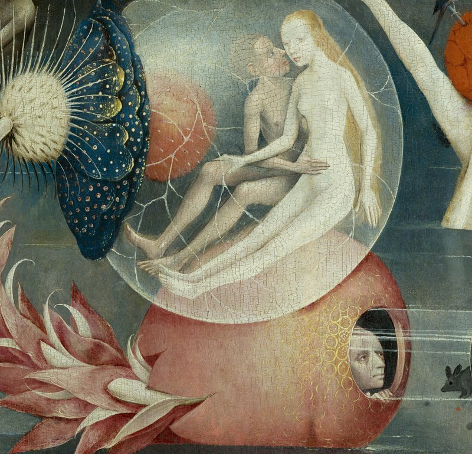
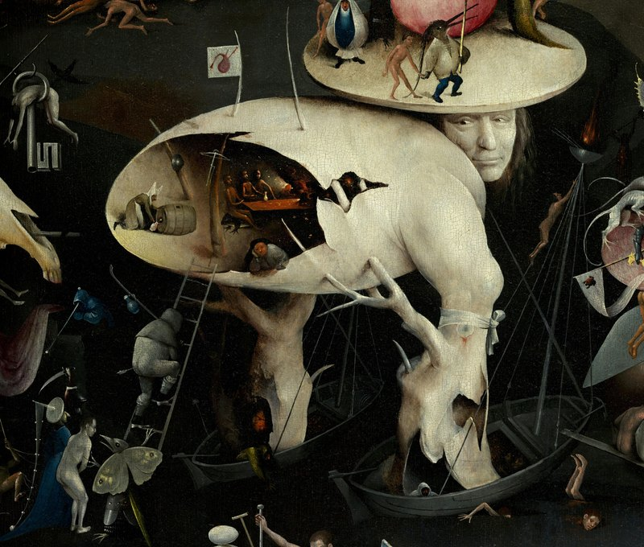
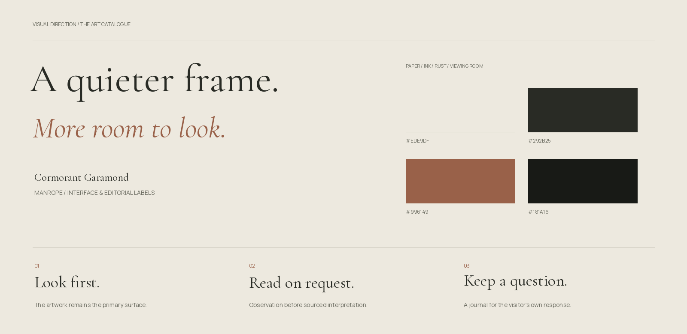
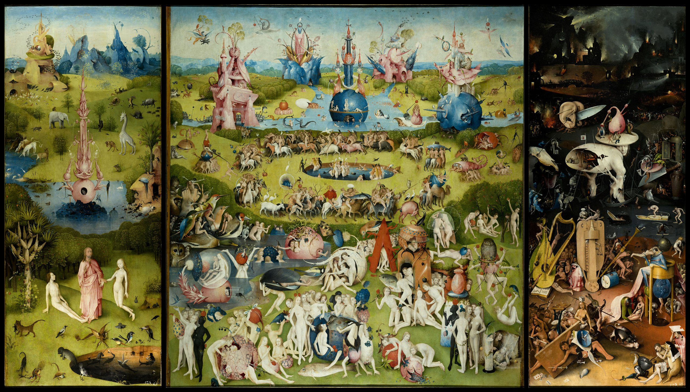

I / THE JOURNEY
Follow a story.
15 stops through three chapters. The authentic exterior panels form a prologue; a saved position lets the visitor continue.
Inside Bosch — an interactive journey into The Garden of Earthly Delights. One world. Thousands of details. No simple answer.
Explore the painting
A reproduction shows the whole painting, but does little to reveal its many stories. Explanation can become a wall of text; unconstrained zoom can leave a visitor without orientation.
I structured the experience around a short sequence: notice a detail, magnify it, read an observation and open a possible interpretation. Its source and degree of certainty stay visible.
Look first. Then read. Leave room for a question of your own.

15 stops through three chapters. The authentic exterior panels form a prologue; a saved position lets the visitor continue.

Deep zoom, 25 annotated regions and search. Enter through any panel; return to the whole painting for context.

Five motif routes connect details. Comparisons lead to further exploration while keeping meanings open.
Warm paper, a generous title, an authentic crop and one primary action. The first screen invites looking and offers a clear entry.
The painting becomes the primary surface. Markers start hidden; the selected detail stays indicated. A paper reading panel does not repeat the image.
Observation first. Then an optional reading with its source and an open question. The order separates what is visible from how it is interpreted.
The journal keeps details and notes in the browser without signup. JSON export lets visitors take their discoveries with them.
Cormorant Garamond gives titles their rhythm; Manrope keeps navigation and labels quiet. Paper, ink and a muted rust accent support the artwork.
Latin and Cyrillic fonts are bundled locally. The artwork is never recoloured or reconstructed. Presentation plates use the authentic reproduction.


Deep zoom, search, related scenes, a local journal and sources are implemented. Frontend code and initial editorial drafts were developed with AI assistance; my role covers concept, requirements, structure and iteration direction.
Ten automated checks and the production build pass. Browser interaction, mobile gestures, accessibility conformance and independent scholarly review remain to be completed.
Observe 8–12 first-time visitors entering a chapter, discovering a detail, following a motif and returning to overview. Record hesitation, lost orientation and voluntary further exploration.
Audience and intended benefits remain hypotheses. This case does not claim unperformed interviews, measured engagement uplift or independent expert approval.